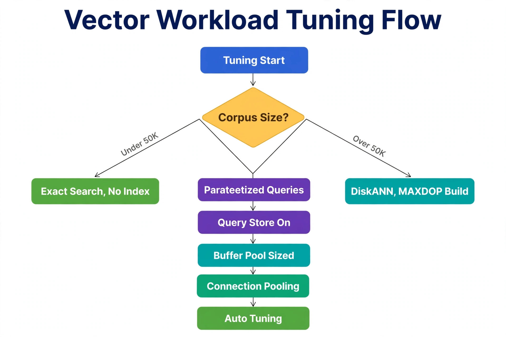

Chapter 10: Tuning Vector Workloads in SQL Server
Vector workloads have a performance profile unlike anything else on a SQL Server instance: large sequential scans for exact search, random graph-walk I/O for DiskANN queries, and memory pressure from multi-kilobyte rows that dwarf typical OLTP rows. The good news is that the tuning toolkit is the one you already own — index design, query patterns, memory configuration, concurrency management, and Automatic Tuning. This chapter applies each of them to vector workloads specifically: when to choose exact versus approximate search, how to design the DiskANN index, how to write retrieval queries the optimizer loves, how to size memory, and how to keep hundreds of concurrent similarity searches from stepping on each other.
---
Choose the Search Path Deliberately
The first tuning decision is architectural, not knobs: exact search or approximate search. Exact search — ORDER BY VECTOR_DISTANCE(...) over the table — scans every vector and computes every distance. It needs no index, gives 100% recall, and performs well up to roughly 50,000 vectors. Approximate search through a DiskANN vector index and VECTOR_SEARCH trades a few percent of recall for logarithmic scaling into the millions.
The mistake to avoid is defaulting to one path for everything. A support-ticket search over 20,000 historical tickets does not need a vector index — the build time and the preview write-path constraints buy nothing. A product catalog with 2 million embeddings and a 100ms p99 SLA cannot live on exact search no matter how much hardware you add. Measure your corpus size, set the path explicitly per table, and revisit the decision as the corpus grows — the crossover is a function of data volume, not of ambition.
---
DiskANN Index Design
When the approximate path is warranted, the index design has exactly three decisions, and only one of them is subtle.
1. The metric must match the model and the queries. METRIC = 'cosine' for normalized text embeddings (the common case), 'euclidean' where magnitude matters, 'dot' for inner-product-trained models. The index does not validate this for you — a mismatched metric returns confidently wrong rankings. Standardize the metric per table in a data dictionary and assert it in deployment scripts.
2. Build with parallelism, then leave it alone. Index builds over millions of vectors are CPU-bound graph construction. MAXDOP in the WITH clause controls build parallelism — size it to what the instance can spare during the maintenance window, since a build competes with everything else for CPU and buffer pool. Schedule builds in low-traffic windows; there is no online build for vector indexes in the current preview.
3. Plan the write path around drop-and-recreate. In the current preview, the table is read-only while the vector index exists, and new data requires dropping and rebuilding the index. Do not fight this — design for it. The production pattern is a staging-table swap: bulk-load new embeddings into a staging table, build the vector index there, then switch it into production with a metadata operation (ALTER SCHEMA ... TRANSFER or partition switching where applicable). Retrieval queries see either the old or the new index, never a half-built one.
-- Production refresh pattern: build on staging, swap into production
-- 1. Load new embeddings into staging (ordinary table, same schema)
-- 2. Build the vector index on staging during the maintenance window
CREATE VECTOR INDEX IX_Stage_Embedding
ON dbo.RagChunks_Stage (Embedding)
WITH (METRIC = 'cosine', TYPE = 'DiskANN', MAXDOP = 8);
-- 3. Atomic swap: staging becomes production
BEGIN TRAN;
EXEC sp_rename 'dbo.RagChunks', 'RagChunks_Old';
EXEC sp_rename 'dbo.RagChunks_Stage', 'RagChunks';
COMMIT;
-- 4. Drop the old table after validation---
Write Retrieval Queries the Optimizer Loves
Vector retrieval queries have a shape, and writing to that shape keeps plans stable. For exact search, the canonical pattern filters relationally first, then ranks:
-- Exact search: relational pre-filter, then rank by distance
DECLARE @q VECTOR(1536) = '...';
SELECT TOP (20)
c.ChunkId, c.ChunkText,
VECTOR_DISTANCE('cosine', c.Embedding, @q) AS Distance
FROM dbo.RagChunks AS c
JOIN dbo.RagDocuments AS d ON d.DocumentId = c.DocumentId
WHERE c.Embedding IS NOT NULL
AND d.SourceUri LIKE 'https://intranet/%' -- relational pre-filter
ORDER BY Distance;For approximate search, keep the VECTOR_SEARCH call clean and do relational work around it — join its results back to dimension tables for display columns and permission checks rather than stuffing predicates inside the TVF call:
-- Approximate search: ANN retrieval, then relational enrichment
DECLARE @q VECTOR(1536) = '...';
SELECT TOP (20)
c.ChunkId, c.ChunkText, d.Title, s.distance
FROM VECTOR_SEARCH(
TABLE = dbo.RagChunks AS t,
COLUMN = Embedding,
SIMILAR_TO = @q,
METRIC = 'cosine',
TOP_N = 50 -- over-fetch, then trim
) AS s
JOIN dbo.RagChunks AS c ON c.ChunkId = s.ChunkId
JOIN dbo.RagDocuments AS d ON d.DocumentId = c.DocumentId
WHERE d.IsPublished = 1 -- relational post-filter on the small result set
ORDER BY s.distance;Two techniques in that query deserve names. Over-fetch and trim: request more candidates from the index (TOP_N = 50) than you display (20), because post-filters and reranking consume candidates — asking for exactly 20 and filtering down to 12 is the most common recall bug in production RAG. Parameterize the query vector like any other parameter: ad-hoc embedding literals in dynamic SQL pollute the plan cache with single-use plans. Pass @q as a parameter from SqlClient or a stored procedure argument.
Watch for plan-cache bloat from embedding literals the way you would watch for any non-parameterized workload: sys.dm_exec_cached_plans grouped by query hash will show it immediately. And enable Query Store on vector databases — vector queries are exactly the kind of workload where a plan regression (say, the optimizer abandoning the vector index path after a statistics update) is worth catching automatically rather than discovering from user complaints.
---
Memory: Vectors Are Hungry
A 1536-dimension float32 vector is about 6 KB — roughly a thousand times the size of a typical OLTP row. That changes the memory math. Ten thousand hot vectors fit comfortably in any buffer pool; ten million need ~60 GB before the DiskANN graph overhead. Size accordingly:
sys.dm_os_buffer_descriptors for the vector database to see how much of the corpus is actually resident, and size max server memory so the hot portion stays cached.sys.dm_exec_query_stats total worker time for your retrieval procedures; if CPU, not I/O, dominates, the answer is the DiskANN index (fewer distance computations), not a bigger VM.---
Concurrency: Pooling, Isolation, and Automatic Tuning
Vector search endpoints are typically chatty — a RAG application issues a retrieval query per user question, and user questions arrive concurrently. Three settings carry most of the weight.
Connection pooling is not optional. Establishing a new SQL Server connection costs milliseconds you do not have in a 100ms retrieval budget, and embedding JSON parameters are large enough that you want them flowing over warm connections. Use SqlClient connection pooling (enabled by default in .NET — do not disable it), size Max Pool Size for your actual concurrency rather than leaving the default 100 to be discovered under load, and keep the retrieval queries on a dedicated connection string so pool exhaustion in the OLTP workload cannot starve vector search (and vice versa).
Read committed snapshot for retrieval. Vector retrieval is overwhelmingly read-only, and it should never block on — or be blocked by — the embedding ingestion writes. Enable READ_COMMITTED_SNAPSHOT on vector databases so readers get row versions from tempdb instead of taking shared locks. Size tempdb accordingly; version-store pressure from a heavy backfill running alongside production retrieval is a real phenomenon.
Let Automatic Tuning watch the plans. SQL Server's Automatic Tuning (automatic plan correction) is well suited to vector workloads because retrieval queries are highly repetitive — the same parameterized shape executed thousands of times. When a plan regression appears (for example, after statistics update on a rapidly growing chunk table), automatic plan correction can force the last known good plan while you investigate. It is not a substitute for understanding the plans (Chapter 14), but it is a safety net that costs nothing to enable:
-- Safety net for repetitive retrieval queries: automatic plan correction
ALTER DATABASE VectorRag SET AUTOMATIC_TUNING (FORCE_LAST_GOOD_PLAN = ON);
-- Verify what it has done lately
SELECT reason, score, details
FROM sys.dm_db_tuning_recommendations;
The Corpus Size? diamond (amber) is the same fork as Chapter 2: Under 50K → Exact Search, No Index (green); Over 50K → DiskANN, MAXDOP Build (teal). Both paths then flow into the identical tuning stack (purple → teal → green): Parameterized Queries for plan reuse, Query Store On to catch regressions, a Buffer Pool Sized for hot vectors, Connection Pooling via SqlClient, and Auto Tuning for plan correction. Vector workloads are still SQL Server workloads — the classic tuning levers apply first.
---
Key Takeaways
VECTOR_DISTANCE under ~50K vectors with no index to maintain; DiskANN plus VECTOR_SEARCH above it. Revisit the decision as the corpus grows.VECTOR_SEARCH with over-fetch (TOP_N above display count) and relational enrichment after. Parameterize the query vector and enable Query Store.sys.dm_exec_query_stats CPU to distinguish compute-bound exact search (needs the index) from I/O-bound retrieval (needs memory).READ_COMMITTED_SNAPSHOT so readers never block writers, and Automatic Tuning's plan correction as a safety net for the highly repetitive retrieval shapes.QueryOptimizer — Self-Hosted SQL Performance Workbench
EXPLAIN visualizer · Index advisor · Slow query dashboard · SQL Server
Test yourself on this chapter
5 questions · instant scoring · explanations included